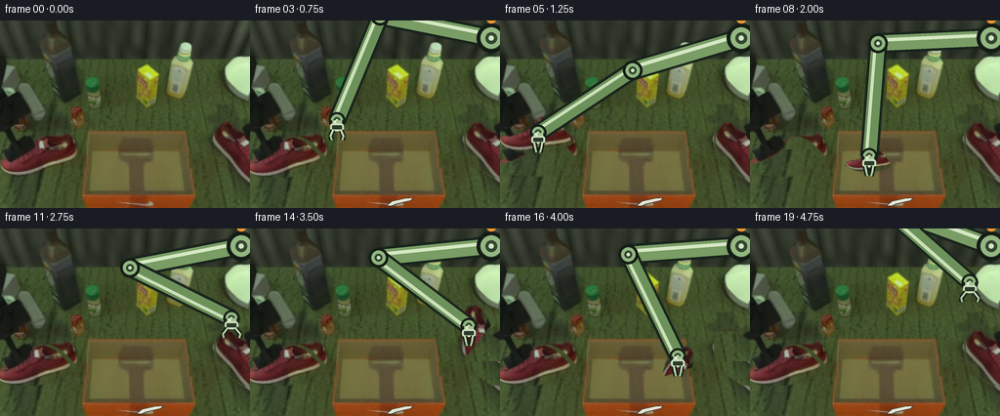
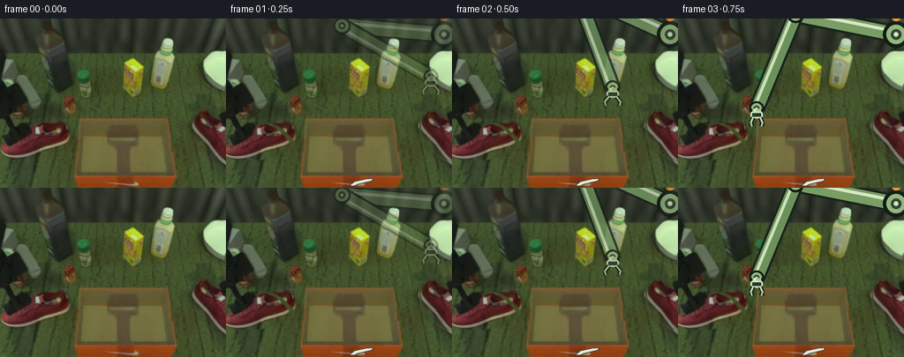
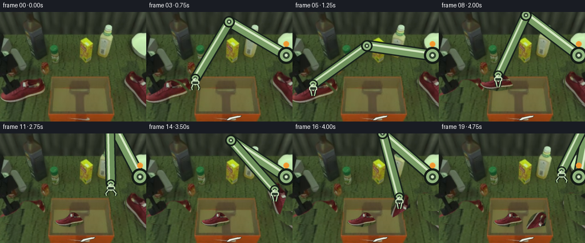
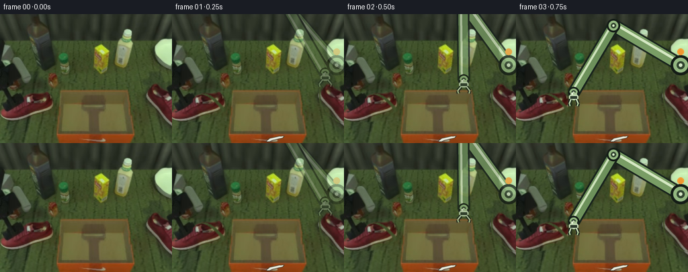
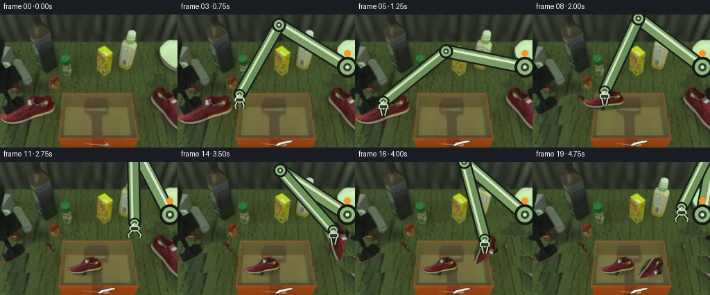
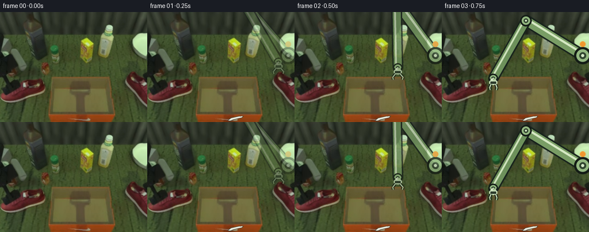

CODING AGENTS AS PIXEL WORLD MODELS
traex/DeepSeek-V4.1-Flash · common50_0048
点击播放 · 原生 RGB 像素
逐轮保存的候选
回放视频、检查图与代码变化。
每份候选均可单独播放。实际图片检查记录在下方工具轨迹中。
候选 01播放与检查图
点击播放 · 原生 RGB 像素


展开代码变化
--- 上一保存版本
+++ 本次保存版本
@@ -0,0 +1,445 @@
+from __future__ import annotations
+
+import math
+from pathlib import Path
+
+import numpy as np
+from PIL import Image, ImageDraw, ImageFilter
+
+import artifact_io
+
+
+CASE_DIR = Path(__file__).resolve().parent
+WIDTH, HEIGHT = 256, 192
+FRAME_COUNT = 20
+SS = 4
+
+
+def smoothstep(value: float) -> float:
+ value = min(1.0, max(0.0, value))
+ return value * value * (3.0 - 2.0 * value)
+
+
+def lerp(a, b, t: float):
+ return tuple(float(x) + (float(y) - float(x)) * t for x, y in zip(a, b))
+
+
+def polygon_mask(points, feather: float = 0.7) -> Image.Image:
+ mask = Image.new("L", (WIDTH, HEIGHT), 0)
+ ImageDraw.Draw(mask).polygon(points, fill=255)
+ if feather:
+ mask = mask.filter(ImageFilter.GaussianBlur(feather))
+ return mask
+
+
+def extract_shoe(image: np.ndarray, points, box):
+ mask = polygon_mask(points)
+ rgba = np.dstack((image, np.asarray(mask, dtype=np.uint8)))
+ x0, y0, x1, y1 = box
+ return Image.fromarray(rgba, "RGBA").crop(box), (x0, y0, x1, y1)
+
+
+def make_clean_plate(image: np.ndarray, masks: list[Image.Image]) -> np.ndarray:
+ """Cover the original shoes with nearby floor texture, then feather the repair."""
+ result = image.astype(np.float32).copy()
+ donors = (
+ (masks[0], (0, 162, 82, 192)),
+ (masks[1], (216, 164, 256, 192)),
+ )
+ for mask_image, (x0, y0, x1, y1) in donors:
+ mask = np.asarray(mask_image, dtype=np.float32) / 255.0
+ donor = image[y0:y1, x0:x1].astype(np.float32)
+ patch = np.empty((HEIGHT, WIDTH, 3), dtype=np.float32)
+ for y in range(HEIGHT):
+ sy = (y - y0) % donor.shape[0]
+ for x in range(WIDTH):
+ sx = (x - x0) % donor.shape[1]
+ patch[y, x] = donor[sy, sx]
+ blend = mask[:, :, None]
+ result = result * (1.0 - blend) + patch * blend
+
+ # Remove residual shoe-color contamination at the feathered seams.
+ red_excess = result[:, :, 0] - 0.5 * (result[:, :, 1] + result[:, :, 2])
+ residual = np.clip((red_excess - 3.0) / 24.0, 0.0, 1.0)
+ all_mask = np.maximum(
+ np.asarray(masks[0], dtype=np.float32),
+ np.asarray(masks[1], dtype=np.float32),
+ ) / 255.0
+ blend = (all_mask * residual * 0.75)[:, :, None]
+ floor = np.median(image[162:192, 0:82].reshape(-1, 3), axis=0)
+ result = result * (1.0 - blend) + floor[None, None, :] * blend
+ return np.clip(result, 0, 255).astype(np.uint8)
+
+
+def transformed_shoe(
+ shoe: Image.Image,
+ source_center,
+ target_center,
+ scale: float,
+ angle: float,
+ alpha: float = 1.0,
+) -> tuple[Image.Image, tuple[int, int]]:
+ rotated = shoe.rotate(angle, resample=Image.Resampling.BICUBIC, expand=True)
+ size = (
+ max(1, int(round(rotated.width * scale))),
+ max(1, int(round(rotated.height * scale))),
+ )
+ resized = rotated.resize(size, Image.Resampling.BICUBIC)
+ if alpha < 1.0:
+ data = np.asarray(resized).copy()
+ data[:, :, 3] = (data[:, :, 3].astype(np.float32) * alpha).astype(np.uint8)
+ resized = Image.fromarray(data, "RGBA")
+ left = int(round(target_center[0] - resized.width / 2))
+ top = int(round(target_center[1] - resized.height / 2))
+ return resized, (left, top)
+
+
+def solve_ik(base, target, upper_length: float, lower_length: float):
+ bx, by = base
+ tx, ty = target
+ dx, dy = tx - bx, ty - by
+ distance = max(1e-6, math.hypot(dx, dy))
+ distance = min(distance, upper_length + lower_length - 0.01)
+ ux, uy = dx / distance, dy / distance
+ along = (
+ upper_length * upper_length
+ - lower_length * lower_length
+ + distance * distance
+ ) / (2.0 * distance)
+ height = math.sqrt(max(0.0, upper_length * upper_length - along * along))
+ px, py = bx + along * ux, by + along * uy
+ candidates = (
+ (px - height * uy, py + height * ux),
+ (px + height * uy, py - height * ux),
+ )
+ elbow = min(candidates, key=lambda point: point[1])
+ return elbow, (bx + ux * distance, by + uy * distance)
+
+
+def draw_capsule(draw, p0, p1, outer, inner, highlight, outer_width, inner_width):
+ draw.line((p0, p1), fill=outer, width=outer_width)
+ draw.line((p0, p1), fill=inner, width=inner_width)
+ dx, dy = p1[0] - p0[0], p1[1] - p0[1]
+ length = max(1.0, math.hypot(dx, dy))
+ ox, oy = -dy / length * inner_width * 0.20, dx / length * inner_width * 0.20
+ draw.line(
+ ((p0[0] + ox, p0[1] + oy), (p1[0] + ox, p1[1] + oy)),
+ fill=highlight,
+ width=max(1, int(inner_width * 0.24)),
+ )
+
+
+def draw_joint(draw, point, radius):
+ x, y = point
+ draw.ellipse(
+ (x - radius, y - radius, x + radius, y + radius),
+ fill=(30, 42, 33, 255),
+ outline=(19, 27, 21, 255),
+ width=max(1, int(radius * 0.22)),
+ )
+ draw.ellipse(
+ (x - radius * 0.72, y - radius * 0.72, x + radius * 0.72, y + radius * 0.72),
+ fill=(147, 183, 128, 255),
+ )
+ draw.ellipse(
+ (x - radius * 0.40, y - radius * 0.40, x + radius * 0.40, y + radius * 0.40),
+ fill=(51, 70, 49, 255),
+ )
+ draw.ellipse(
+ (x - radius * 0.17, y - radius * 0.17, x + radius * 0.17, y + radius * 0.17),
+ fill=(211, 230, 195, 255),
+ )
+
+
+def render_arm(gripper, opening: float, fade: float) -> Image.Image:
+ """Render one rigid two-link arm plus its articulated parallel-jaw gripper."""
+ scale = SS
+ layer = Image.new("RGBA", (WIDTH * scale, HEIGHT * scale), (0, 0, 0, 0))
+ draw = ImageDraw.Draw(layer)
+
+ def s(point):
+ return (point[0] * scale, point[1] * scale)
+
+ base = (247.0, 18.0)
+ wrist = (float(gripper[0]), float(gripper[1]) - 12.0)
+ elbow, wrist_solved = solve_ik(base, wrist, 116.0, 116.0)
+ shoulder = s(base)
+ elbow_px = s(elbow)
+ wrist_px = s(wrist_solved)
+
+ # Shoulder mount and two rigid arm links.
+ draw.ellipse(
+ (shoulder[0] - 54, shoulder[1] - 54, shoulder[0] + 54, shoulder[1] + 54),
+ fill=(24, 33, 26, 255),
+ )
+ draw.ellipse(
+ (shoulder[0] - 43, shoulder[1] - 43, shoulder[0] + 43, shoulder[1] + 43),
+ fill=(82, 105, 72, 255),
+ outline=(184, 211, 165, 255),
+ width=8,
+ )
+ draw_capsule(
+ draw,
+ shoulder,
+ elbow_px,
+ (24, 35, 28, 255),
+ (121, 157, 101, 255),
+ (213, 232, 195, 255),
+ 21 * scale,
+ 16 * scale,
+ )
+ draw_capsule(
+ draw,
+ elbow_px,
+ wrist_px,
+ (24, 35, 28, 255),
+ (109, 145, 91, 255),
+ (204, 225, 185, 255),
+ 19 * scale,
+ 14 * scale,
+ )
+ draw_joint(draw, shoulder, 15 * scale)
+ draw_joint(draw, elbow_px, 10 * scale)
+ draw_joint(draw, wrist_px, 8.5 * scale)
+
+ # Short wrist collar and gripper palm.
+ palm = (gripper[0], gripper[1] - 7.0)
+ draw_capsule(
+ draw,
+ wrist_px,
+ s(palm),
+ (23, 32, 26, 255),
+ (166, 194, 146, 255),
+ (231, 240, 218, 255),
+ 15 * scale,
+ 10 * scale,
+ )
+ palm_px = s(palm)
+ half_palm = 7.0 * scale
+ draw.rounded_rectangle(
+ (
+ palm_px[0] - half_palm,
+ palm_px[1] - 2 * scale,
+ palm_px[0] + half_palm,
+ palm_px[1] + 6 * scale,
+ ),
+ radius=3 * scale,
+ fill=(43, 57, 43, 255),
+ outline=(201, 223, 185, 255),
+ width=2 * scale,
+ )
+
+ # Parallel jaws. Their spacing changes while the gripper opens and closes.
+ jaw = 3.0 + 6.0 * opening
+ tip_y = gripper[1] + 8.0
+ for side in (-1.0, 1.0):
+ top = (gripper[0] + side * 4.2, gripper[1] - 2.0)
+ knee = (gripper[0] + side * jaw, gripper[1] + 4.0)
+ tip = (gripper[0] + side * (jaw - 1.2), tip_y)
+ draw.line((s(top), s(knee)), fill=(20, 29, 23, 255), width=5 * scale)
+ draw.line((s(knee), s(tip)), fill=(20, 29, 23, 255), width=5 * scale)
+ draw.line((s(top), s(knee)), fill=(194, 216, 178, 255), width=2 * scale)
+ draw.line((s(knee), s(tip)), fill=(167, 198, 148, 255), width=2 * scale)
+
+ # A small amber status light echoes the orange front panel in the scene.
+ draw.ellipse(
+ (
+ shoulder[0] - 5 * scale,
+ shoulder[1] - 25 * scale,
+ shoulder[0] + 5 * scale,
+ shoulder[1] - 15 * scale,
+ ),
+ fill=(239, 151, 48, 255),
+ )
+
+ if fade < 1.0:
+ data = np.asarray(layer).copy()
+ data[:, :, 3] = (data[:, :, 3].astype(np.float32) * fade).astype(np.uint8)
+ layer = Image.fromarray(data, "RGBA")
+ return layer.resize((WIDTH, HEIGHT), Image.Resampling.LANCZOS)
+
+
+def add_shadow(frame: Image.Image, center, radius_x: float, radius_y: float, opacity: int):
+ layer = Image.new("RGBA", (WIDTH, HEIGHT), (0, 0, 0, 0))
+ draw = ImageDraw.Draw(layer)
+ x, y = center
+ draw.ellipse(
+ (x - radius_x, y - radius_y, x + radius_x, y + radius_y),
+ fill=(13, 18, 12, opacity),
+ )
+ layer = layer.filter(ImageFilter.GaussianBlur(4.0))
+ return Image.alpha_composite(frame.convert("RGBA"), layer)
+
+
+def draw_nike_logo(frame: Image.Image) -> Image.Image:
+ scale = SS
+ layer = Image.new("RGBA", (WIDTH * scale, HEIGHT * scale), (0, 0, 0, 0))
+ draw = ImageDraw.Draw(layer)
+ points = [
+ (140.5, 188.6),
+ (145.2, 184.7),
+ (151.0, 183.4),
+ (158.8, 181.8),
+ (167.2, 181.2),
+ (164.3, 184.4),
+ (156.2, 186.2),
+ (149.0, 188.0),
+ (144.8, 190.0),
+ (141.0, 190.0),
+ ]
+ scaled = [(int(round(x * scale)), int(round(y * scale))) for x, y in points]
+ draw.polygon(scaled, fill=(229, 231, 217, 255))
+ draw.line(scaled + [scaled[0]], fill=(69, 67, 55, 255), width=scale)
+ return Image.alpha_composite(frame.convert("RGBA"), layer.resize(
+ (WIDTH, HEIGHT), Image.Resampling.LANCZOS
+ ))
+
+
+def main():
+ source = np.asarray(Image.open(CASE_DIR / "first_frame.png").convert("RGB"))
+ left_points = [
+ (0, 148), (5, 145), (13, 143), (21, 140), (28, 136), (33, 131),
+ (37, 124), (42, 119), (49, 118), (57, 121), (64, 126), (70, 132),
+ (76, 138), (78, 143), (72, 148), (63, 152), (53, 156), (42, 159),
+ (30, 160), (18, 159), (7, 156), (0, 153),
+ ]
+ right_points = [
+ (220, 105), (232, 104), (244, 107), (255, 113), (255, 160),
+ (247, 160), (239, 155), (232, 150), (226, 144), (221, 136),
+ (219, 127), (219, 116),
+ ]
+ left_box = (0, 113, 82, 163)
+ right_box = (216, 100, 256, 164)
+ left_shoe, _ = extract_shoe(source, left_points, left_box)
+ right_shoe, _ = extract_shoe(source, right_points, right_box)
+ masks = [polygon_mask(left_points), polygon_mask(right_points)]
+ clean_plate = Image.fromarray(make_clean_plate(source, masks), "RGB")
+
+ left_source_center = (36.0, 139.0)
+ right_source_center = (238.0, 132.0)
+ left_destination = (123.0, 150.0)
+ right_destination = (171.0, 151.0)
+
+ frames = [source.copy()]
+ for index in range(1, FRAME_COUNT):
+ frame = clean_plate.convert("RGBA")
+
+ # Keep the orange box and its small white mark stable after the first frame.
+ frame = draw_nike_logo(frame)
+
+ left_scale, left_angle = 1.0, 0.0
+ right_scale, right_angle = 1.0, 0.0
+ left_center = left_source_center
+ right_center = right_source_center
+ left_visible = True
+ right_visible = True
+
+ if index <= 4:
+ gripper = lerp((232.0, 78.0), (39.0, 127.0), smoothstep((index - 1) / 3.0))
+ opening = 1.0 if index <= 2 else 0.6
+ elif index <= 9:
+ if index == 5:
+ left_center, left_scale, left_angle = (39.0, 116.0), 0.96, -8.0
+ gripper = (39.0, 127.0)
+ elif index == 6:
+ left_center, left_scale, left_angle = (67.0, 105.0), 0.86, -14.0
+ gripper = (67.0, 116.0)
+ elif index == 7:
+ left_center, left_scale, left_angle = (100.0, 116.0), 0.72, -12.0
+ gripper = (100.0, 127.0)
+ elif index == 8:
+ left_center, left_scale, left_angle = (122.0, 142.0), 0.59, -8.0
+ gripper = (122.0, 151.0)
+ else:
+ left_center, left_scale, left_angle = left_destination, 0.55, -6.0
+ gripper = (132.0, 105.0)
+ opening = 0.0 if index <= 8 else 1.0
+ elif index <= 18:
+ if index == 10:
+ gripper = (184.0, 95.0)
+ opening = 1.0
+ elif index == 11:
+ gripper = (237.0, 104.0)
+ opening = 1.0
+ elif index == 12:
+ gripper = (238.0, 123.0)
+ opening = 0.55
+ elif index == 13:
+ right_center, right_scale, right_angle = (238.0, 111.0), 0.94, -18.0
+ gripper = (238.0, 122.0)
+ opening = 0.0
+ elif index == 14:
+ right_center, right_scale, right_angle = (224.0, 101.0), 0.84, -38.0
+ gripper = (224.0, 112.0)
+ opening = 0.0
+ elif index == 15:
+ right_center, right_scale, right_angle = (203.0, 112.0), 0.72, -58.0
+ gripper = (203.0, 123.0)
+ opening = 0.0
+ elif index == 16:
+ right_center, right_scale, right_angle = (182.0, 134.0), 0.62, -72.0
+ gripper = (182.0, 143.0)
+ opening = 0.0
+ elif index == 17:
+ right_center, right_scale, right_angle = right_destination, 0.56, -78.0
+ gripper = (171.0, 142.0)
+ opening = 0.0
+ else:
+ right_center, right_scale, right_angle = right_destination, 0.55, -78.0
+ gripper = (164.0, 96.0)
+ opening = 1.0
+ else:
+ gripper = (225.0, 67.0)
+ opening = 1.0
+
+ # Draw soft contact shadows before the rigid objects.
+ if left_visible:
+ shadow_center = (left_center[0] + 4, left_center[1] + 7)
+ frame = add_shadow(
+ frame,
+ shadow_center,
+ max(7.0, 29.0 * left_scale),
+ max(3.0, 8.0 * left_scale),
+ 63 if index >= 5 else 34,
+ )
+ left_rgba, left_pos = transformed_shoe(
+ left_shoe,
+ left_source_center,
+ left_center,
+ left_scale,
+ left_angle,
+ )
+ frame.alpha_composite(left_rgba, dest=left_pos)
+
+ if right_visible:
+ shadow_center = (right_center[0] + 3, right_center[1] + 8)
+ frame = add_shadow(
+ frame,
+ shadow_center,
+ max(7.0, 15.0 * right_scale),
+ max(3.0, 12.0 * right_scale),
+ 63 if index >= 13 else 34,
+ )
+ right_rgba, right_pos = transformed_shoe(
+ right_shoe,
+ right_source_center,
+ right_center,
+ right_scale,
+ right_angle,
+ )
+ frame.alpha_composite(right_rgba, dest=right_pos)
+
+ fade = 0.36 if index == 1 else (0.78 if index == 2 else 1.0)
+ arm = render_arm(gripper, opening, fade)
+ frame = Image.alpha_composite(frame, arm)
+ frames.append(np.asarray(frame.convert("RGB"), dtype=np.uint8).copy())
+
+ output = np.stack(frames, axis=0)
+ assert output.shape == (FRAME_COUNT, HEIGHT, WIDTH, 3)
+ assert output.dtype == np.uint8
+ assert np.array_equal(output[0], source)
+ artifact_io.save(output, CASE_DIR)
+
+
+if __name__ == "__main__":
+ main()
候选 02播放与检查图
点击播放 · 原生 RGB 像素

展开代码变化
--- 上一保存版本
+++ 本次保存版本
@@ -160,7 +160,7 @@
def s(point):
return (point[0] * scale, point[1] * scale)
- base = (247.0, 18.0)
+ base = (245.0, 76.0)
wrist = (float(gripper[0]), float(gripper[1]) - 12.0)
elbow, wrist_solved = solve_ik(base, wrist, 116.0, 116.0)
shoulder = s(base)
@@ -335,61 +335,76 @@
right_visible = True
if index <= 4:
- gripper = lerp((232.0, 78.0), (39.0, 127.0), smoothstep((index - 1) / 3.0))
- opening = 1.0 if index <= 2 else 0.6
- elif index <= 9:
- if index == 5:
- left_center, left_scale, left_angle = (39.0, 116.0), 0.96, -8.0
- gripper = (39.0, 127.0)
- elif index == 6:
- left_center, left_scale, left_angle = (67.0, 105.0), 0.86, -14.0
- gripper = (67.0, 116.0)
- elif index == 7:
- left_center, left_scale, left_angle = (100.0, 116.0), 0.72, -12.0
- gripper = (100.0, 127.0)
- elif index == 8:
- left_center, left_scale, left_angle = (122.0, 142.0), 0.59, -8.0
- gripper = (122.0, 151.0)
- else:
- left_center, left_scale, left_angle = left_destination, 0.55, -6.0
- gripper = (132.0, 105.0)
- opening = 0.0 if index <= 8 else 1.0
- elif index <= 18:
- if index == 10:
- gripper = (184.0, 95.0)
- opening = 1.0
- elif index == 11:
- gripper = (237.0, 104.0)
- opening = 1.0
- elif index == 12:
- gripper = (238.0, 123.0)
- opening = 0.55
- elif index == 13:
- right_center, right_scale, right_angle = (238.0, 111.0), 0.94, -18.0
- gripper = (238.0, 122.0)
- opening = 0.0
- elif index == 14:
- right_center, right_scale, right_angle = (224.0, 101.0), 0.84, -38.0
- gripper = (224.0, 112.0)
- opening = 0.0
- elif index == 15:
- right_center, right_scale, right_angle = (203.0, 112.0), 0.72, -58.0
- gripper = (203.0, 123.0)
- opening = 0.0
- elif index == 16:
- right_center, right_scale, right_angle = (182.0, 134.0), 0.62, -72.0
- gripper = (182.0, 143.0)
- opening = 0.0
- elif index == 17:
- right_center, right_scale, right_angle = right_destination, 0.56, -78.0
- gripper = (171.0, 142.0)
- opening = 0.0
- else:
- right_center, right_scale, right_angle = right_destination, 0.55, -78.0
- gripper = (164.0, 96.0)
- opening = 1.0
+ gripper = lerp(
+ (228.0, 100.0),
+ left_source_center,
+ smoothstep((index - 1) / 3.0),
+ )
+ opening = 1.0 if index <= 2 else 0.58
+ elif index == 5:
+ gripper = left_source_center
+ opening = 0.0
+ elif index == 6:
+ left_center, left_scale, left_angle = (50.0, 121.0), 0.92, -9.0
+ gripper = left_center
+ opening = 0.0
+ elif index == 7:
+ left_center, left_scale, left_angle = (76.0, 108.0), 0.84, -15.0
+ gripper = left_center
+ opening = 0.0
+ elif index == 8:
+ left_center, left_scale, left_angle = (104.0, 123.0), 0.74, -11.0
+ gripper = left_center
+ opening = 0.0
+ elif index == 9:
+ left_center, left_scale, left_angle = left_destination, 0.64, -7.0
+ gripper = left_center
+ opening = 0.0
+ elif index == 10:
+ left_center, left_scale, left_angle = left_destination, 0.64, -7.0
+ gripper = (138.0, 114.0)
+ opening = 1.0
+ elif index == 11:
+ left_center, left_scale, left_angle = left_destination, 0.64, -7.0
+ gripper = (194.0, 101.0)
+ opening = 1.0
+ elif index == 12:
+ left_center, left_scale, left_angle = left_destination, 0.64, -7.0
+ gripper = right_source_center
+ opening = 0.58
+ elif index == 13:
+ left_center, left_scale, left_angle = left_destination, 0.64, -7.0
+ gripper = right_source_center
+ opening = 0.0
+ elif index == 14:
+ left_center, left_scale, left_angle = left_destination, 0.64, -7.0
+ right_center, right_scale, right_angle = (225.0, 111.0), 0.91, -19.0
+ gripper = right_center
+ opening = 0.0
+ elif index == 15:
+ left_center, left_scale, left_angle = left_destination, 0.64, -7.0
+ right_center, right_scale, right_angle = (206.0, 108.0), 0.83, -39.0
+ gripper = right_center
+ opening = 0.0
+ elif index == 16:
+ left_center, left_scale, left_angle = left_destination, 0.64, -7.0
+ right_center, right_scale, right_angle = (187.0, 124.0), 0.75, -59.0
+ gripper = right_center
+ opening = 0.0
+ elif index == 17:
+ left_center, left_scale, left_angle = left_destination, 0.64, -7.0
+ right_center, right_scale, right_angle = right_destination, 0.66, -78.0
+ gripper = right_center
+ opening = 0.0
+ elif index == 18:
+ left_center, left_scale, left_angle = left_destination, 0.64, -7.0
+ right_center, right_scale, right_angle = right_destination, 0.66, -78.0
+ gripper = (161.0, 113.0)
+ opening = 1.0
else:
- gripper = (225.0, 67.0)
+ left_center, left_scale, left_angle = left_destination, 0.64, -7.0
+ right_center, right_scale, right_angle = right_destination, 0.66, -78.0
+ gripper = (215.0, 78.0)
opening = 1.0
# Draw soft contact shadows before the rigid objects.
候选 03播放与检查图
点击播放 · 原生 RGB 像素


展开代码变化
--- 上一保存版本
+++ 本次保存版本
@@ -299,8 +299,9 @@
source = np.asarray(Image.open(CASE_DIR / "first_frame.png").convert("RGB"))
left_points = [
(0, 148), (5, 145), (13, 143), (21, 140), (28, 136), (33, 131),
- (37, 124), (42, 119), (49, 118), (57, 121), (64, 126), (70, 132),
- (76, 138), (78, 143), (72, 148), (63, 152), (53, 156), (42, 159),
+ (37, 124), (42, 119), (49, 116), (56, 114), (63, 117), (69, 121),
+ (74, 127), (78, 134), (80, 141), (76, 146), (70, 150), (62, 153),
+ (53, 156), (42, 159),
(30, 160), (18, 159), (7, 156), (0, 153),
]
right_points = [
候选 04播放与检查图
候选 05播放与检查图
点击播放 · 原生 RGB 像素


展开代码变化
--- 上一保存版本
+++ 本次保存版本
@@ -36,7 +36,7 @@
mask = polygon_mask(points)
rgba = np.dstack((image, np.asarray(mask, dtype=np.uint8)))
x0, y0, x1, y1 = box
- return Image.fromarray(rgba, "RGBA").crop(box), (x0, y0, x1, y1)
+ return Image.fromarray(rgba).crop(box), (x0, y0, x1, y1)
def make_clean_plate(image: np.ndarray, masks: list[Image.Image]) -> np.ndarray:
@@ -255,7 +255,7 @@
if fade < 1.0:
data = np.asarray(layer).copy()
data[:, :, 3] = (data[:, :, 3].astype(np.float32) * fade).astype(np.uint8)
- layer = Image.fromarray(data, "RGBA")
+ layer = Image.fromarray(data)
return layer.resize((WIDTH, HEIGHT), Image.Resampling.LANCZOS)
@@ -314,10 +314,10 @@
left_shoe, _ = extract_shoe(source, left_points, left_box)
right_shoe, _ = extract_shoe(source, right_points, right_box)
masks = [polygon_mask(left_points), polygon_mask(right_points)]
- clean_plate = Image.fromarray(make_clean_plate(source, masks), "RGB")
-
- left_source_center = (36.0, 139.0)
- right_source_center = (238.0, 132.0)
+ clean_plate = Image.fromarray(make_clean_plate(source, masks))
+
+ left_source_center = (41.0, 138.0)
+ right_source_center = (236.0, 132.0)
left_destination = (123.0, 150.0)
right_destination = (171.0, 151.0)
可观测工具轨迹
实际执行的命令与返回图片。
命令 1exit 0
/bin/bash -c "pwd && rg --files -g '"'!*.git*'"' | sed -n '1,200p'"
命令 2exit 0
/bin/bash -c "sed -n '1,240p' prompt.txt"
命令 3exit 0
/bin/bash -c "sed -n '1,280p' GENERATION_RULES.md"
命令 4exit 0
/bin/bash -c "git status --short && find . -maxdepth 2 -type f -printf '%p %s bytes\\n' | sort | sed -n '1,200p'"
命令 5exit 0
/bin/bash -c "cat task_spec.json && sed -n '1,260p' artifact_io.py"
命令 6exit 0
/bin/bash -c "sed -n '1,260p' player_template.html"
命令 7exit 0
/bin/bash -c "python - <<'PY'
from PIL import Image
import numpy as np
im=Image.open('first_frame.png')
print(im.mode, im.size)
a=np.asarray(im)
print(a.shape,a.dtype, a.min(),a.max())
# most common exact colors
u,c=np.unique(a.reshape(-1,3),axis=0,return_counts=True)
idx=np.argsort(c)[-30:][::-1]
for i in idx: print(tuple(u[i]),int(c[i]))
PY"命令 8exit 0
/bin/bash -c "python - <<'PY'
from PIL import Image
import numpy as np
from sklearn.cluster import KMeans
im=np.asarray(Image.open('first_frame.png')).astype(float)
# cluster in RGB at downsample-ish all
for k in [10,16,24]:
km=KMeans(k, random_state=1, n_init=10).fit(im.reshape(-1,3))
centers=km.cluster_centers_.round().astype(int)
labels=km.labels_.reshape(im.shape[:2])
print('\\nK',k)
for j,c in enumerate(centers):
m=labels==j; ys,xs=np.where(m)
print(j,tuple(c),m.sum(),(xs.min(),ys.min(),xs.max(),ys.max()),'cent',(round(xs.mean(),1),round(ys.mean(),1)))
PY"命令 9exit 0
/bin/bash -c "python - <<'PY'
from PIL import Image
import numpy as np
im=np.asarray(Image.open('first_frame.png'))
# downsample to 64x48 block mean; print luminance ascii
lum=(0.2126*im[:,:,0]+0.7152*im[:,:,1]+0.0722*im[:,:,2])
chars=' .:-=+*#%@'
for y in range(0,192,4):
row=''
for x in range(0,256,4):
v=lum[y:y+4,x:x+4].mean()
row+=chars[min(len(chars)-1,int(v/256*len(chars)))]
print(row)
PY"命令 10exit 0
/bin/bash -c "python - <<'PY'
try:
import cv2; print('cv2',cv2.__version__)
except Exception as e: print('no cv2',e)
try:
import scipy; print('scipy',scipy.__version__)
except Exception as e: print('no scipy',e)
PY"命令 11exit 0
/bin/bash -c "python - <<'PY'
from PIL import Image
import numpy as np
im=np.asarray(Image.open('first_frame.png'))
# print representative RGBs at grid coordinates every 16 px
for y in range(0,192,16):
print('y',y, ' '.join('%02x%02x%02x'%tuple(im[y,x]) for x in range(0,256,16)))
PY"命令 12exit 0
/bin/bash -c "python - <<'PY'
import cv2, numpy as np
from PIL import Image
im=np.asarray(Image.open('first_frame.png'))
hsv=cv2.cvtColor(im,cv2.COLOR_RGB2HSV)
H,S,V=[hsv[:,:,i] for i in range(3)]
masks={
'red':(((H<12)|(H>170))&(S>45)&(V>28)),
'orange':((H>=10)&(H<25)&(S>80)&(V>60)),
'yellowgreen':((H>=25)&(H<48)&(S>60)&(V>45)),
'mint':((H>=45)&(H<85)&(S>20)&(V>120)),
'bright':(V>125),
'dark':(V<35),
}
for name,m in masks.items():
m=(m.astype(np.uint8)*255)
n,lab,st,cent=cv2.connectedComponentsWithStats(m,8)
comps=[]
for i in range(1,n):
x,y,w,h,area=st[i]
if area>=10: comps.append((area,x,y,w,h,round(cent[i,0],1),round(cent[i,1],1)))
comps=sorted(comps,reverse=True)[:30]
print('\\n',name,'total',m.sum()//255,'components',len(comps))
for c in comps: print(c)
PY"命令 13exit 0
/bin/bash -c "python - <<'PY'
import cv2,numpy as np
from PIL import Image
im=np.asarray(Image.open('first_frame.png'))
hsv=cv2.cvtColor(im,cv2.COLOR_RGB2HSV)
# produce color class map at 2x2; classes based on RGB/hsv
# R red, O orange, Y yellow, G green, M mint, W white/gray, K dark, . bg
H,S,V=hsv[:,:,0],hsv[:,:,1],hsv[:,:,2]
cls=np.full(im.shape[:2],'.',dtype='<U1')
cls[(V<40)]='K'
cls[(S<35)&(V>=55)]='W'
cls[(H<12)&(S>70)&(V>45)]='R'
cls[((H>=12)&(H<27)&(S>85)&(V>55))]='O'
cls[(H>=27)&(H<48)&(S>65)&(V>55)]='Y'
cls[(H>=48)&(H<95)&(S>28)&(V>100)]='M'
cls[(H>=48)&(H<110)&(S>25)&(V<100)]='G'
# 2x2 dominant
for y in range(0,192,4):
row=''
for x in range(0,256,4):
vals,counts=np.unique(cls[y:y+4,x:x+4],return_counts=True)
row+=vals[np.argmax(counts)]
print(row)
PY"命令 14exit 0
/bin/bash -c "python - <<'PY'
import cv2,numpy as np
from PIL import Image
im=np.asarray(Image.open('first_frame.png'))
hsv=cv2.cvtColor(im,cv2.COLOR_RGB2HSV)
H,S,V=[hsv[:,:,i] for i in range(3)]
# masks
mR=((H<14)|(H>168))&(S>45)&(V>30)
mO=(H>=10)&(H<28)&(S>90)&(V>65)
mW=(S<45)&(V>110)
# print per pixel downsample 2x2 for region y 100-192 full
for y in range(100,192,2):
row=''
for x in range(0,256,2):
b=np.zeros(4,dtype=int)
b[0]=mR[y:y+2,x:x+2].sum(); b[1]=mO[y:y+2,x:x+2].sum(); b[2]=mW[y:y+2,x:x+2].sum()
# dominant red O white, else luminance shades
if b[0]>=2: ch='R'
elif b[1]>=2: ch='O'
elif b[2]>=2: ch='W'
else:
v=V[y:y+2,x:x+2].mean(); ch=' .:-=+*#%@'[min(9,int(v/256*10))]
row+=ch
print(f'{y:3d} {row}')
PY"命令 15exit 0
/bin/bash -c "python - <<'PY'
from PIL import Image
import numpy as np
im=Image.open('first_frame.png')
# nearest upscale 4x and save
im.resize((1024,768),Image.Resampling.NEAREST).save('source_x4.png')
# individual crops x4: lower left, center, right
for name,box in [('ll',(0,90,130,192)),('mid',(70,90,205,192)),('right',(150,85,256,192)),('upper',(0,0,256,115))]:
c=im.crop(box); c.resize((c.width*5,c.height*5),Image.Resampling.NEAREST).save(f'crop_{name}.png')
print(name,box,c.size)
PY"命令 16exit 0
/bin/bash -c "python - <<'PY'
import cv2,numpy as np
from PIL import Image
im=np.asarray(Image.open('first_frame.png'))
# edge detection summary on low region
g=cv2.cvtColor(im,cv2.COLOR_RGB2GRAY)
e=cv2.Canny(g,25,60)
# lines
lines=cv2.HoughLinesP(e,1,np.pi/180,threshold=20,minLineLength=15,maxLineGap=4)
for l in sorted(lines[:,0].tolist(), key=lambda z: -((z[2]-z[0])**2+(z[3]-z[1])**2))[:40]:
print(l)
PY"命令 17exit 0
/bin/bash -c "python - <<'PY'
import numpy as np
from PIL import Image
im=np.asarray(Image.open('first_frame.png'))
for y in range(100,192,4):
print(y, ' '.join('%02x%02x%02x'%tuple(im[y,x]) for x in range(0,256,8)))
PY"命令 18exit 0
/bin/bash -c "python - <<'PY'
from PIL import Image
import numpy as np
im=np.asarray(Image.open('first_frame.png')).astype(np.float32)
# define all colors as dominant clusters from 5x5? find pixels of high saturation red, orange, white; print convex bbox and sampled palette
import cv2
hsv=cv2.cvtColor(im.astype(np.uint8),cv2.COLOR_RGB2HSV)
H,S,V=[hsv[:,:,i] for i in range(3)]
for name,m in [
('red_shoe_left',(H<14)&(S>80)&(V>45)&(np.indices(H.shape)[1]<85)&(np.indices(H.shape)[0]>105)),
('red_shoe_right',(H<14)&(S>80)&(V>45)&(np.indices(H.shape)[1]>200)&(np.indices(H.shape)[0]>90)),
('box',(H>=12)&(H<27)&(S>100)&(V>60)&(np.indices(H.shape)[1]>75)&(np.indices(H.shape)[1]<210)&(np.indices(H.shape)[0]>105)),
]:
ys,xs=np.where(m)
print(name, len(xs), (xs.min(),ys.min(),xs.max(),ys.max()), np.percentile(im[m],[5,25,50,75,95],axis=0))
PY"命令 19exit 0
/bin/bash -c "python - <<'PY'
from PIL import Image
import numpy as np
im=np.asarray(Image.open('first_frame.png')).astype(float)
# column average values for upper structure and floor bands
for ya,yb in [(0,40),(20,80),(40,100),(90,120),(110,130),(130,150),(150,175),(175,192)]:
print('\\n',ya,yb)
for xa,xb in [(0,40),(40,80),(80,120),(120,160),(160,200),(200,240),(240,256)]:
q=im[ya:yb,xa:xb].reshape(-1,3)
print((xa,xb), tuple(np.median(q,axis=0).astype(int)), tuple(np.mean(q,axis=0).astype(int)), end=' | ')
print()
PY"命令 20exit 0
/bin/bash -c "python - <<'PY'
from PIL import Image
import numpy as np
im=Image.open('first_frame.png')
# crops perhaps inspect with sixel not available. save enhanced versions
x=np.asarray(im).astype(float)
for name,func in [
('bright', lambda a:np.clip((a-20)*2.2,0,255)),
('sat', lambda a:np.clip((a-a.mean(axis=2,keepdims=True))*2+a.mean(axis=2,keepdims=True),0,255)),
]:
Image.fromarray(func(x).astype(np.uint8)).resize((1024,768),Image.Resampling.NEAREST).save(f'{name}_x4.png')
PY"命令 21exit 0
/bin/bash -c "python - <<'PY'
from PIL import Image
import numpy as np
im=np.asarray(Image.open('first_frame.png')).astype(float)
# foreground masks by chroma difference and brightness. estimate background row median excluding extremes, report residual bboxes
# generic bright/saturated points, inspect connected comps via simple threshold
import cv2
for label,m in {
'warm_bright': ((im[:,:,0]-im[:,:,2]>18)&(im[:,:,0]>75)&(im[:,:,1]<im[:,:,0]*.9)),
'red': ((im[:,:,0]-im[:,:,1]>20)&(im[:,:,0]>45)),
'orange':((im[:,:,0]-im[:,:,2]>45)&(im[:,:,1]>50)&(im[:,:,0]>90)),
'white': ((im.min(axis=2)>95)&((im.max(axis=2)-im.min(axis=2))<35)),
}.items():
u=(m.astype(np.uint8)*255)
n,l,st,c=cv2.connectedComponentsWithStats(u,8)
print(label, sorted([tuple(v) for v in st[1:] if v[4]>15],key=lambda x:-x[4])[:15])
PY"命令 22exit 0
/bin/bash -c "python - <<'PY'
from PIL import Image
import numpy as np
im=np.asarray(Image.open('first_frame.png'))
# analyze red mask connected regions row profiles, print x-runs at y intervals
for y in [108,112,116,120,124,128,132,136,140,144,148,152,156,160,178,184,190]:
row=im[y]
m=((row[:,0]>row[:,1]+18)&(row[:,0]>row[:,2]+15)&(row[:,0]>42))
runs=[]; s=None
for x,v in enumerate(m):
if v and s is None:s=x
if s is not None and (not v or x==255):
e=x if v else x-1
if e-s>=2:runs.append((s,e))
s=None
print(y,runs)
PY"命令 23exit 0
/bin/bash -c "python - <<'PY'
import numpy as np
from PIL import Image
im=np.asarray(Image.open('first_frame.png'))
# x,y coordinates by print colored small thumbnails as ansi blocks (truecolor) -- terminal may support
# print 64x48 ansi colored bg
for y in range(0,192,4):
s=''
for x in range(0,256,4):
rgb=im[y:y+4,x:x+4].mean((0,1)).astype(int)
s+=f'\\x1b[48;2;{rgb[0]};{rgb[1]};{rgb[2]}m '
print(s+'\\x1b[0m')
PY"命令 24exit 0
/bin/bash -c "python - <<'PY'
from PIL import Image
import numpy as np, cv2
im=np.asarray(Image.open('first_frame.png'))
hsv=cv2.cvtColor(im,cv2.COLOR_RGB2HSV); H,S,V=[hsv[:,:,i] for i in range(3)]
# box region x 82:205 y 105:192, print bright low sat components
for condname,m in {
'brightlow':(V>100)&(S<80),
'whiteish':(V>120)&(S<50),
'verybright':(V>140),
}.items():
mm=(m & (np.indices(m.shape)[0]>=105)&(np.indices(m.shape)[0]<192)&(np.indices(m.shape)[1]>=82)&(np.indices(m.shape)[1]<205)).astype(np.uint8)*255
n,l,st,c=cv2.connectedComponentsWithStats(mm,8)
print(condname)
for i in range(1,n):
if st[i,4]>=2: print(tuple(st[i]),tuple(c[i]))
PY"命令 25exit 0
/bin/bash -c "python - <<'PY'
import numpy as np
from PIL import Image
im=np.asarray(Image.open('first_frame.png'))
# print R,G,B levels over orange box interior every 10
for y in [112,116,120,124,128,132,136,140,144,148,152,156,160,164,168,172,176,180,184,188]:
print('y',y, ' '.join('%3d,%3d,%3d'%tuple(im[y,x]) for x in [84,90,100,110,120,130,140,150,160,170,180,190,198]))
PY"命令 26exit 0
/bin/bash -c "python - <<'PY'
from PIL import Image
import numpy as np, cv2
im=np.asarray(Image.open('first_frame.png'))
# cluster box only via kmeans
from sklearn.cluster import KMeans
for box in [(84,113,201,177),(84,113,201,192),(0,100,256,192)]:
x1,y1,x2,y2=box
a=im[y1:y2,x1:x2].reshape(-1,3).astype(float)
km=KMeans(12,random_state=0,n_init=8).fit(a)
print(box)
for c,n in sorted(zip(km.cluster_centers_.round().astype(int),np.bincount(km.labels_)),key=lambda q:-q[1]): print(tuple(c),n)
PY"命令 27exit 0
/bin/bash -c "python - <<'PY'
from PIL import Image
import numpy as np, cv2
im=np.asarray(Image.open('first_frame.png'))
hsv=cv2.cvtColor(im,cv2.COLOR_RGB2HSV); H,S,V=[hsv[:,:,i] for i in range(3)]
# define semantic labels by nearest palette manually
# Background: low sat dark green; floor: olive/tan; box: tan/orange; shoes: red; arm: bright mint; metal: gray
classes=np.zeros((192,256),dtype=np.uint8)
# red
red=((H<14)|(H>170))&(S>65)&(V>38)
# orange strong
orange=(H>=10)&(H<25)&(S>100)&(V>65)
# tan box
tan=(H>=18)&(H<35)&(S>45)&(V>70)
# bright mint
mint=(H>=45)&(H<90)&(S>20)&(V>120)
# gray
gray=(S<30)&(V>65)
# dark
dark=(V<40)
classes[dark]=1; classes[gray]=2; classes[mint]=3; classes[red]=4; classes[orange]=5; classes[tan]=6
chars=' .KGYmROT'
# print at 2x2 majority with axis every 8 cols; no trunc
print(' '+''.join(str((x//10)%10) for x in range(0,256,2)))
print(' '+''.join(str(x%10) for x in range(0,256,2)))
for y in range(0,192,2):
row=''
for x in range(0,256,2):
vals,cnts=np.unique(classes[y:y+2,x:x+2],return_counts=True)
row+=chars[vals[np.argmax(cnts)]]
print(f'{y:3d} '+row)
PY"命令 28exit 0
/bin/bash -c "python - <<'PY'
import numpy as np
from PIL import Image
im=np.asarray(Image.open('first_frame.png'))
# palette/color similarity manually for red shoe pixels; crop left x0:80 y110:160 and print coordinate grid
# ASCII with hue chars plus RGB average samples
import cv2
hsv=cv2.cvtColor(im,cv2.COLOR_RGB2HSV); H,S,V=[hsv[:,:,i] for i in range(3)]
for y in range(105,161,1):
row=''
for x in range(0,81,1):
h,s,v=H[y,x],S[y,x],V[y,x]
if s>90 and v>70 and (h<12 or h>170): ch='R'
elif s>70 and v>70 and h<25: ch='O'
elif s<35 and v>100: ch='W'
elif v<30: ch=' '
elif v<50: ch='.'
elif v<75: ch=':'
elif v<100: ch='+'
elif v<140: ch='*'
else: ch='#'
row+=ch
print(f'{y:3d} {row}')
PY"命令 29exit 0
/bin/bash -c 'python generate.py'
命令 30exit 0
/bin/bash -c "python - <<'PY'
from PIL import Image
import numpy as np
for name in ['inspection.png','transition_check.png','frames/00.png','frames/04.png','frames/08.png','frames/12.png','frames/16.png','frames/19.png']:
im=Image.open(name)
print(name, im.size, np.asarray(im).mean((0,1)).round(2))
# verify first identical and frame diffs
orig=np.asarray(Image.open('first_frame.png'))
for i in [0,1,2,4,8,12,16,19]:
a=np.asarray(Image.open(f'frames/{i:02d}.png'))
print(i,'diff mean',np.abs(a.astype(int)-orig.astype(int)).mean(),'changed',np.any(a"'!=orig,axis=2).mean())
PY'命令 31exit 0
/bin/bash -c "python - <<'PY'
from PIL import Image
import numpy as np
for n in [1,2,4,6,8,10,12,14,16,18,19]:
im=np.asarray(Image.open(f'frames/{n:02d}.png'))
print('\\nFRAME',n)
for y in range(0,192,4):
s=''
for x in range(0,256,4):
rgb=im[y:y+4,x:x+4].mean((0,1)).astype(int)
s+=f'\\x1b[48;2;{rgb[0]};{rgb[1]};{rgb[2]}m '
print(s+'\\x1b[0m')
PY"命令 32exit 0
/bin/bash -c "python - <<'PY'
import cv2, numpy as np
from PIL import Image
for i in range(20):
im=np.asarray(Image.open(f'frames/{i:02d}.png'))
hsv=cv2.cvtColor(im,cv2.COLOR_RGB2HSV); H,S,V=[hsv[:,:,j] for j in range(3)]
red=((H<14)|(H>170))&(S>65)&(V>38)
n,l,st,c=cv2.connectedComponentsWithStats((red*255).astype(np.uint8),8)
comps=sorted([tuple(map(int,v)) for v in st[1:] if v[4]>=20],key=lambda q:-q[4])[:8]
# white logo pixels around box bottom
white=(V>150)&(S<45)
yy,xx=np.where(white & (np.indices(white.shape)[1]>=130)&(np.indices(white.shape)[1]<=180)&(np.indices(white.shape)[0]>=178))
print(i,'red',comps,'logo n',len(xx), (xx.min(),yy.min(),xx.max(),yy.max()) if len(xx) else None)
PY"命令 33exit 0
/bin/bash -c "python generate.py && python - <<'PY'
import cv2,numpy as np
from PIL import Image
for i in range(20):
im=np.asarray(Image.open(f'frames/{i:02d}.png'))
hsv=cv2.cvtColor(im,cv2.COLOR_RGB2HSV); H,S,V=[hsv[:,:,j] for j in range(3)]
red=((H<14)|(H>170))&(S>65)&(V>38)
n,l,st,c=cv2.connectedComponentsWithStats((red*255).astype(np.uint8),8)
comps=sorted([tuple(map(int,v)) for v in st[1:] if v[4]>=50],key=lambda q:-q[4])[:8]
print(i,comps)
PY"命令 34exit 0
/bin/bash -c "python - <<'PY'
from PIL import Image
import numpy as np
# produce labeled contact sheet crops with x4 nearest for candidate frames, and low-res text map
for i in [1,3,5,7,9,11,13,15,17,19]:
im=Image.open(f'frames/{i:02d}.png')
im.resize((768,576),Image.Resampling.NEAREST).save(f'preview_{i:02d}.png')
# quantify residual orange box edge / green arm connected components
import cv2
for i in range(20):
im=np.asarray(Image.open(f'frames/{i:02d}.png'))
hsv=cv2.cvtColor(im,cv2.COLOR_RGB2HSV);H,S,V=[hsv[:,:,j] for j in range(3)]
mint=(H>=42)&(H<95)&(S>22)&(V>115)
n,l,st,c=cv2.connectedComponentsWithStats((mint*255).astype(np.uint8),8)
comps=sorted([tuple(map(int,v)) for v in st[1:] if v[4]>=20],key=lambda q:-q[4])[:6]
print(i,comps)
PY"命令 35exit 0
/bin/bash -c "python - <<'PY'
# Make a compact sequence strip with labels for final human-readable inspection.
from PIL import Image, ImageDraw
import numpy as np
frames=[Image.open(f'frames/{i:02d}.png') for i in range(20)]
out=Image.new('RGB',(256*5,(192+18)*4),(22,25,30));d=ImageDraw.Draw(out)
for k,im in enumerate(frames):
x=(k%5)*256;y=(k//5)*210
d.text((x+4,y+3),f'{k:02d} {k/4:.2f}s',fill='white')
out.paste(im,(x,y+18))
out.save('sequence_check.png')
print(out.size)
PY"命令 36exit 0
/bin/bash -c "python - <<'PY'
# Report frame-to-frame motion energy and semantic red component centroids for continuity review.
import cv2, numpy as np
from PIL import Image
prev=None
for i in range(20):
a=np.asarray(Image.open(f'frames/{i:02d}.png')).astype(np.int16)
hsv=cv2.cvtColor(a.astype(np.uint8),cv2.COLOR_RGB2HSV); H,S,V=[hsv[:,:,j] for j in range(3)]
red=((H<14)|(H>170))&(S>65)&(V>38)
n,l,st,c=cv2.connectedComponentsWithStats((red*255).astype(np.uint8),8)
comps=sorted([(int(st[j,4]),round(c[j,0],1),round(c[j,1],1)) for j in range(1,n) if st[j,4]>=50],reverse=True)[:5]
d=np.abs(a-prev).mean() if prev is not None else 0
print(f'{i:02d} diff={d:5.2f} red={comps}')
prev=a
PY"命令 37exit 0
/bin/bash -c "python generate.py && python - <<'PY'
import cv2,numpy as np
from PIL import Image
for i in [0,5,9,10,13,17,19]:
im=np.asarray(Image.open(f'frames/{i:02d}.png'))
hsv=cv2.cvtColor(im,cv2.COLOR_RGB2HSV); H,S,V=[hsv[:,:,j] for j in range(3)]
red=((H<14)|(H>170))&(S>65)&(V>38)
n,l,st,c=cv2.connectedComponentsWithStats((red*255).astype(np.uint8),8)
comps=sorted([tuple(map(int,v)) for v in st[1:] if v[4]>=50],key=lambda q:-q[4])[:8]
print(i,comps)
PY"命令 38exit 1
/bin/bash -c "python - <<'PY'
from PIL import Image
import numpy as np
import cv2
for i in [5,9,10,17,19]:
im=np.asarray(Image.open(f'frames/{i:02d}.png'))
hsv=cv2.cvtColor(im,cv2.COLOR_RGB2HSV);H,S,V=[hsv[:,:,j] for j in range(3)]
red=((H<14)|(H>170))&(S>65)&(V>38)
# print red ascii every 2x2 lower
print('\\nFRAME',i)
for y in range(100,192,2):
s=''
for x in range(0,256,2):
q=red[y:y+2,x:x+2].sum()
if q>=3:ch='#'
elif q>=1:ch='+'
else:
v=V[y:y+2,x:x+2].mean();ch=' .:-=*'[min(6,int(v/256*7))]
s+=ch
print(s)
PY"命令 39exit 0
/bin/bash -c "python - <<'PY'
from PIL import Image
import numpy as np, cv2
for i in [5,9,10,17,19]:
im=np.asarray(Image.open(f'frames/{i:02d}.png'))
hsv=cv2.cvtColor(im,cv2.COLOR_RGB2HSV);H,S,V=[hsv[:,:,j] for j in range(3)]
red=((H<14)|(H>170))&(S>65)&(V>38)
print('\\nFRAME',i)
for y in range(100,192,2):
s=''
for x in range(0,256,2):
q=red[y:y+2,x:x+2].sum()
if q>=3:ch='#'
elif q>=1:ch='+'
else:
v=V[y:y+2,x:x+2].mean();ch=' .:-=*'[min(5,int(v/256*6))]
s+=ch
print(s)
PY"命令 40exit 0
/bin/bash -c "python -m py_compile generate.py && python generate.py && python - <<'PY'
from pathlib import Path
import hashlib, json
import numpy as np
from PIL import Image
case=Path('.')
spec=json.loads((case/'task_spec.json').read_text())
z=np.load(case/'pixels.npz')['pixels']
print('npz',z.shape,z.dtype)
print('first exact',np.array_equal(z[0],np.asarray(Image.open(case/'first_frame.png'))))
frames=np.stack([np.asarray(Image.open(case/f'frames/{i:02d}.png')) for i in range(20)])
print('frames',frames.shape,frames.dtype,'range',int(frames.min()),int(frames.max()))
print('unique frame count',len({hashlib.sha256(f.tobytes()).hexdigest() for f in frames}))
print('index bytes',(case/'index.html').stat().st_size,'has 20', '\"frames\":20' in (case/'index.html').read_text())
print('inspection',Image.open(case/'inspection.png').size,'transition',Image.open(case/'transition_check.png').size)
# per-frame change energy, confirming no accidental identical stretches beyond the initial grasp beat
for i in range(1,20):
print(f'{i:02d}',round(float(np.abs(frames[i].astype(np.int16)-frames[i-1].astype(np.int16)).mean()),3))
PY"命令 41exit 0
/bin/bash -c "python - <<'PY'
from pathlib import Path
import json, re
import numpy as np
from PIL import Image
case=Path('.')
source=np.asarray(Image.open(case/'first_frame.png').convert('RGB'))
packed=np.load(case/'pixels.npz')['pixels']
frames=np.stack([np.asarray(Image.open(case/f'frames/{i:02d}.png').convert('RGB')) for i in range(20)])
assert frames.shape==(20,192,256,3) and frames.dtype==np.uint8
assert np.array_equal(frames[0],source)
assert packed.shape==(192,256,20) and packed.dtype==np.uint32
unpacked=np.stack([
np.stack([(packed[:,:,i]>>16)&255,(packed[:,:,i]>>8)&255,packed[:,:,i]&255],axis=2)
for i in range(20)
]).astype(np.uint8)
assert np.array_equal(frames,unpacked)
html=(case/'index.html').read_text()
assert '__DATA__' not in html and '__ID__' not in html
m=re.search(r\"const DATA=(\\{.*?\\}),W=\",html)
data=json.loads(m.group(1))
assert data['frames']==20 and data['fps']==4 and len(data['deltas'])==19
print('PASS: 20 frames, 256x192 RGB uint8, 4 fps, frame 00 exact, 19 deltas, player data valid')
print('index.html', (case/'index.html').stat().st_size, 'bytes')
print('pixels.npz', (case/'pixels.npz').stat().st_size, 'bytes')
PY"保存候选 5 份；完成命令 41 次；可验证图片返回 0 张。原始 API 响应与完整日志保留在本地。